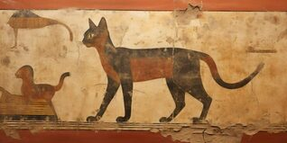
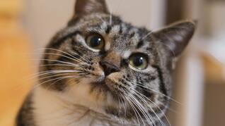

Los gatos han sido compañeros fascinantes y misteriosos para los humanos a lo largo de la historia. Desde su domesticación en antiguas civilizaciones hasta su lugar como mascotas adoradas en millones de hogares, estos pequeños felinos han conquistado corazones con su elegancia, independencia y curiosas habilidades. En esta sección, exploraremos el mundo felino: Su historia, sus características únicas, y qué los hace tan especiales. Descubre por qué los gatos son mucho más que simples mascotas; son un enigma para la naturaleza.

Historia de la Domesticación
Los gatos comenzaron su relación con los humanos hace aproximadamente 9,000 años.
Se domesticaron inicialmente en el Creciente Fértil (actual Medio Oriente)
Fueron valorados por su habilidad para cazar roedores, protegiendo alimentos almacenados.
Características únicas
Pueden ver con claridad en condiciones de poca luz, gracias a una capa reflectante en sus ojos llamada Tapetum lucidum.
No solo es señal de placer, sino también un mecanismo de sanación; las vibraciones pueden ayudar a reducir el estrés y estimular la recuperación ósea.
Los gatos pasan casi el 50% de su tiempo despiertos aseándose, lo que ayuda a mantener su pelaje limpio y libre de parásitos.
Pueden saltar hasta 6 veces la longitud de su cuerpo, gracias a sus músculos traseros bien desarrollados.


Curiosidades
- Cada gato tiene un patrón de nariz único, como las huellas dactilares humanas.
- Tienen más de 20 músculos en sus orejas, lo que les permite moverlas de forma independiente.